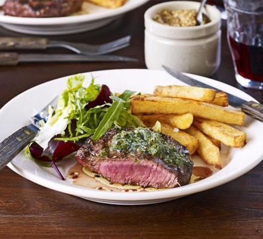

🥩 Pub-Style Steak (Perfect Every Time)
A perfectly cooked pub-style steak served with chips and a fresh salad.
- 2 ribeye steaks (about 1 inch thick)
- Salt and pepper to taste
- 2 tbsp olive oil
- 2 cloves garlic, smashed
- 2 sprigs fresh rosemary or thyme
- 2 tbsp butter
- Season steaks with salt and pepper.
- Heat olive oil in a cast iron skillet over high heat.
- Add steaks and cook for 4-5 minutes per side for medium-rare.
- Add garlic, rosemary/thyme, and butter to the pan.
- Baste the steaks with the melted butter for 1 minute.
- Remove from heat and let rest for 5 minutes before serving.